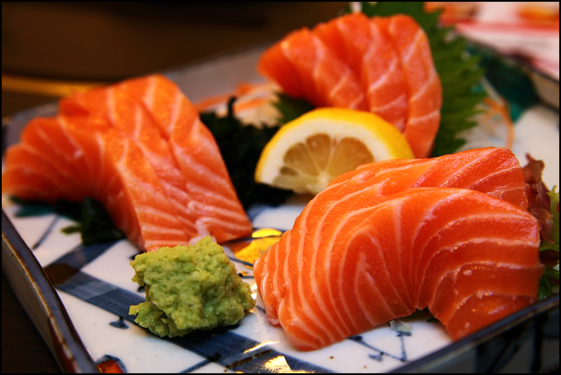

Sashimi
Sashimi is so good. It's that simple. I love japanese food
and I love sashimi. My favorite sashimi is the mackeral and
the yellow tail. The only thing that's quite disappointing about
sashimi is how pricy it can be, however it's worth it if you go eat
it at the right places.

Ramen
Everyone knows what ramen is. Ramen has been such a popular dish
around the world however, japanese ramen is the best kind there is
because there is no other broth like it. My favorite ramen place to go to
is near the NYU campus called Ramenya! Not only is the broth delicious, but
the noodles are perfect. As unhealthy as ramen is, I don't think I could ever
give it up because it holds such a special place in my heart.
Sushi
Finally, my other favorite Japanese dish is sushi. There are so
many different kinds of rolls with different unimaginable tastes.
The image to the right is a photo of the well-known california tuna
roll. Whenever I go to eat sushi, I like to get a variety of different
rolls rather than getting many of the same kind. I really love the rolls
that have eel in them. Most of all, if I were to recommend one roll that is a must-try,
it would have to be the dragon roll just because it's a classic.